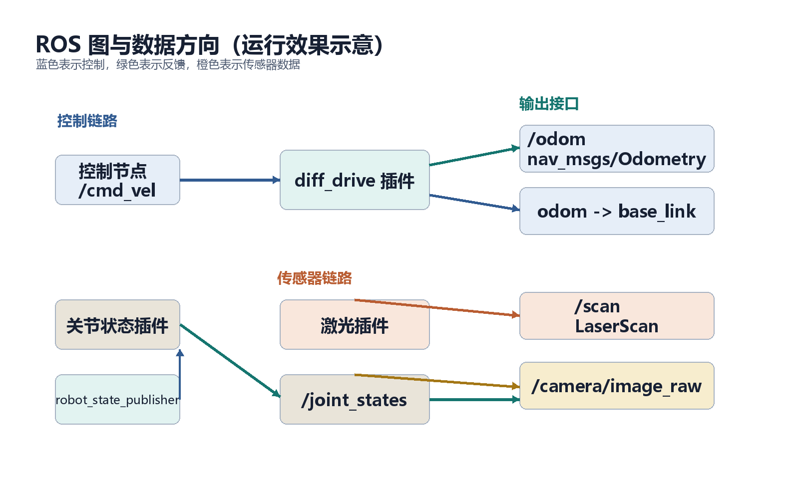

步骤 4：差速驱动与里程计
前置条件：完成步骤 3。 本步目标：让
/cmd_vel能驱动 Gazebo 中的机器人，并正确发布/odom和里程计 TF。 预计时间：40-60 分钟。
1. 差速驱动原理
两轮差速机器人通过左右轮速度差实现前进、后退和旋转。
设：
- 机器人线速度为 ；
- 角速度为 ；
- 轮距为 ；
- 轮半径为 。
左右轮线速度满足：
- 两轮同速 -> 直行；
- 左侧慢、右侧快 -> 左转；
- 两轮反向同速 -> 原地旋转。
Gazebo 差速插件把 /cmd_vel 中的 linear.x 和 angular.z 转换成左右轮目标速度。
2. 插件配置
<gazebo>
<plugin name="diff_drive" filename="libgazebo_ros_diff_drive.so">
<updateRate>50.0</updateRate>
<leftJoint>left_wheel_joint</leftJoint>
<rightJoint>right_wheel_joint</rightJoint>
<wheelSeparation>${wheel_separation}</wheelSeparation>
<wheelDiameter>${2.0 * wheel_radius}</wheelDiameter>
<wheelTorque>20.0</wheelTorque>
<wheelAcceleration>1.0</wheelAcceleration>
<commandTopic>cmd_vel</commandTopic>
<odometryTopic>odom</odometryTopic>
<odometryFrame>odom</odometryFrame>
<robotBaseFrame>base_link</robotBaseFrame>
<publishWheelJointState>true</publishWheelJointState>
<publishWheelTF>false</publishWheelTF>
<publishTf>1</publishTf>
<broadcastTF>1</broadcastTF>
<alwaysOn>true</alwaysOn>
</plugin>
</gazebo>本仓库现有 TurtleBot3/mbot 示例使用的是 CamelCase 参数。教程中的 URDF 与仓库版本保持一致；如果你在其他环境使用新版
gazebo_ros插件，需要按该版本文档调整参数名。
插件节点图：
graph LR
T[cmd_vel] --> P[diff_drive]
P --> L[left_wheel_joint]
P --> R[right_wheel_joint]
P --> O[odom]
P --> TF[odom -> base_link]
3. 参数解析
| 参数 | 必须与什么保持一致 | 错误后现象 |
|---|---|---|
leftJoint |
URDF 左轮关节名 | 左轮不动 |
rightJoint |
URDF 右轮关节名 | 右轮不动 |
wheelSeparation |
左右轮接触点距离 | 转向过大或过小 |
wheelDiameter |
2 x wheel_radius |
里程计速度比例错误 |
wheelTorque |
大于摩擦阻力 | 机器人不动或加速弱 |
wheelAcceleration |
合理平滑控制 | 起步过猛或响应过慢 |
commandTopic |
控制话题 | 发布者存在但插件收不到 |
robotBaseFrame |
URDF 根 link | TF 树断裂 |
wheelSeparation 不是车身宽度。如果车体宽 0.28 m、车轮厚 0.03 m，左右轮中心距不一定等于车体宽度，必须以 URDF 的关节 origin 为准。
4. 关节状态发布
本仓库当前 Gazebo 差速插件可以通过 publishWheelJointState 把车轮关节状态直接发到 /joint_states，供 robot_state_publisher 更新 TF：
<publishWheelJointState>true</publishWheelJointState>数据链：
graph LR
G[Gazebo 关节] --> D[diff_drive 插件]
D --> JS[/joint_states/]
JS --> R[robot_state_publisher]
R --> TF[base_link -> wheels]
5. 数据流验证
运行成功后的数据方向应与下图一致：

虚拟机实际运行效果：Gazebo 中已经生成 mybot，rostopic hz /odom 显示平均约 50 Hz。

rqt_graph 中可以看到 Gazebo 节点、robot_state_publisher、/joint_states 和 /odom 的连接方向：

启动系统后检查：
rosnode list
rostopic list | grep -E "cmd_vel|odom|joint_states|tf"
rostopic info /cmd_vel
rostopic info /odom
rostopic hz /odom
rostopic hz /joint_states
rosrun tf tf_echo odom base_link手动发布线性速度：
rostopic pub -r 10 /cmd_vel geometry_msgs/Twist \
"{linear: {x: 0.3, y: 0.0, z: 0.0}, angular: {x: 0.0, y: 0.0, z: 0.0}}"手动发布角速度：
rostopic pub -r 10 /cmd_vel geometry_msgs/Twist \
"{linear: {x: 0.0, y: 0.0, z: 0.0}, angular: {x: 0.0, y: 0.0, z: 0.6}}"成功现象：
- 线性速度使机器人向前；
- 正角速度使机器人左转；
/odom的位姿持续变化；tf_echo odom base_link输出随时间变化；rostopic hz /joint_states显示约 50 Hz。
6. 常见问题
| 现象 | 优先检查 | 处理 |
|---|---|---|
/cmd_vel 没有订阅者 |
插件是否加载 | 检查 Gazebo 启动日志 |
有 /cmd_vel 但机器人不动 |
关节名、力矩、暂停状态 | 检查 leftJoint 和 rightJoint |
| 机器人旋转方向相反 | 左右轮配置 | 交换左右轮或检查车轮朝向 |
| 只原地转不走直线 | 轮距或左右轮镜像 | 检查关节 origin 和差速参数 |
没有 /odom |
odometryTopic 与插件加载 |
检查 Gazebo 启动日志中的参数警告 |
odom -> base_link 缺失 |
publishTf、robotBaseFrame |
打开 TF 发布，检查 base_link 名称 |
| TF 时间戳异常 | use_sim_time |
让所有节点使用 Gazebo 时间 |
7. 本步验收
- [ ] 能解释差速驱动左右轮速度关系；
- [ ]
/cmd_vel有差速插件作为订阅者； - [ ]
/odom能发布且频率合理； - [ ]
tf_echo odom base_link能输出位姿； - [ ] 手动发布速度时机器人运动方向正确；
- [ ] 知道机器人不动时应该按什么顺序排查。
- 上一步：URDF 与 xacro 建模
- 返回教程总览
- 下一步：步骤 5：激光与相机插件